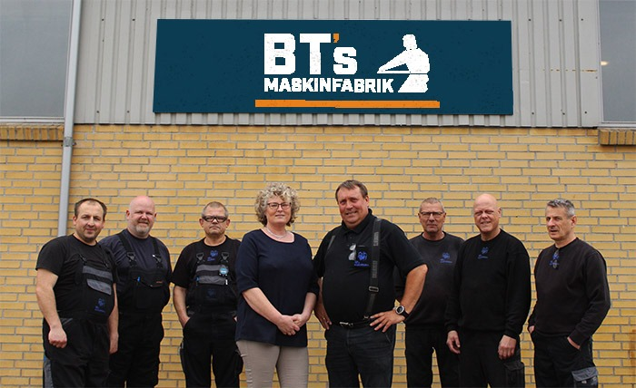
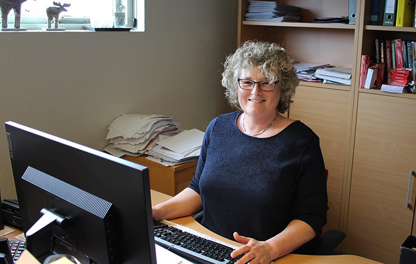

Teamet

Brian Thomsen
I 1997 etablerede jeg BT’s maskinfabrik fordi jeg gerne ville prøve kræfter med at styre og tilrettelægge en virksomhed inden for mit fag. Det startede småt med et lille værksted og nu har vi 13 erfarne maskinarbejder, flot fabrik og min kone Trine Thomsen på kontoret til regnskabsstyrelse.
Jeg ved hvad det koster at have udstyr der står stille. Derfor stræber vi efter at opfylde vores kunders behov på en hurtig og effektiv måde. Så hvis jeg kan hjælpe med noget skriv en mail, ring på telefon eller kom et smut forbi maskinfabrikken, så tager vi en snak.
service er service
For Trine og jeg er service ikke en tom kliché, som alle mere eller mindre kan påstå at de kan levere. For os er er service at kunder altid kan komme i kontakt med og vi er omstillingsparate til at sætte produktion i gang omgående, også selvom det er søndag eller sent på dagen.
Vi er meget fleksibel og henter og levere alt fra tegninger, produkter og maskiner der skal repareres. derudover tager vi personligt ud og ser på problemet for at kunne rådgive og give de bedst mulige løsningsforslag. Vi ikke at kunden skal bruge tid på det. Det gør vi gerne.